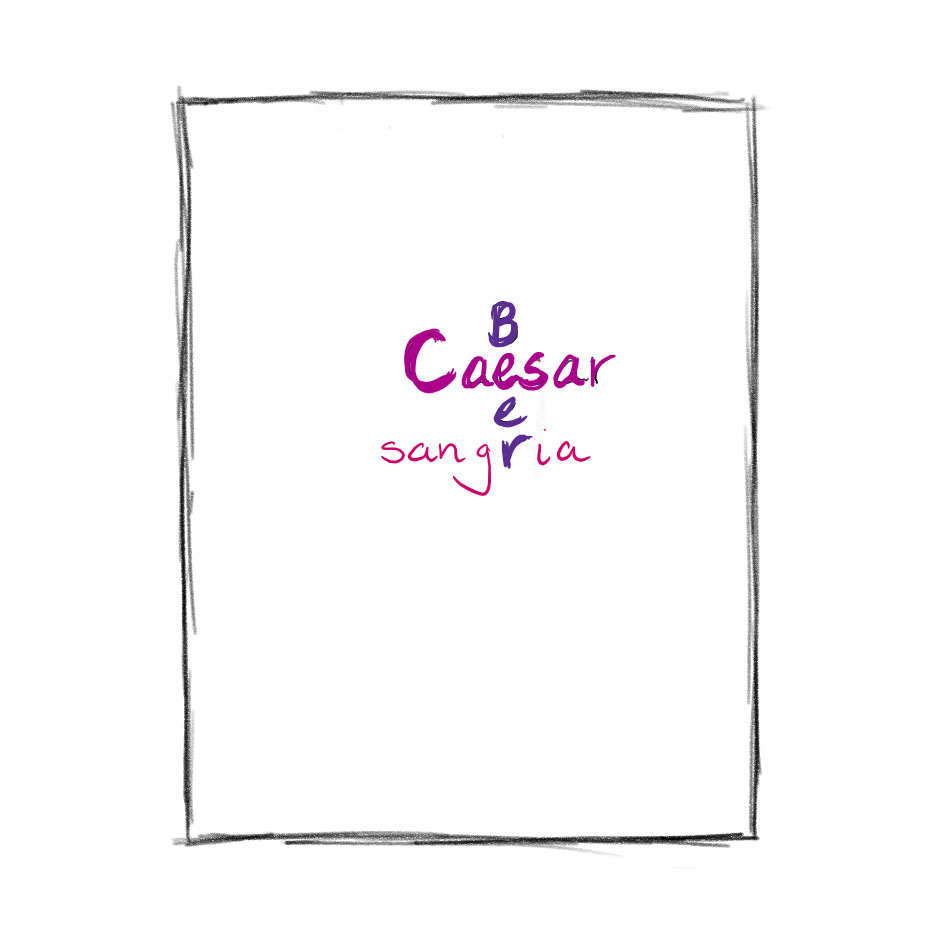
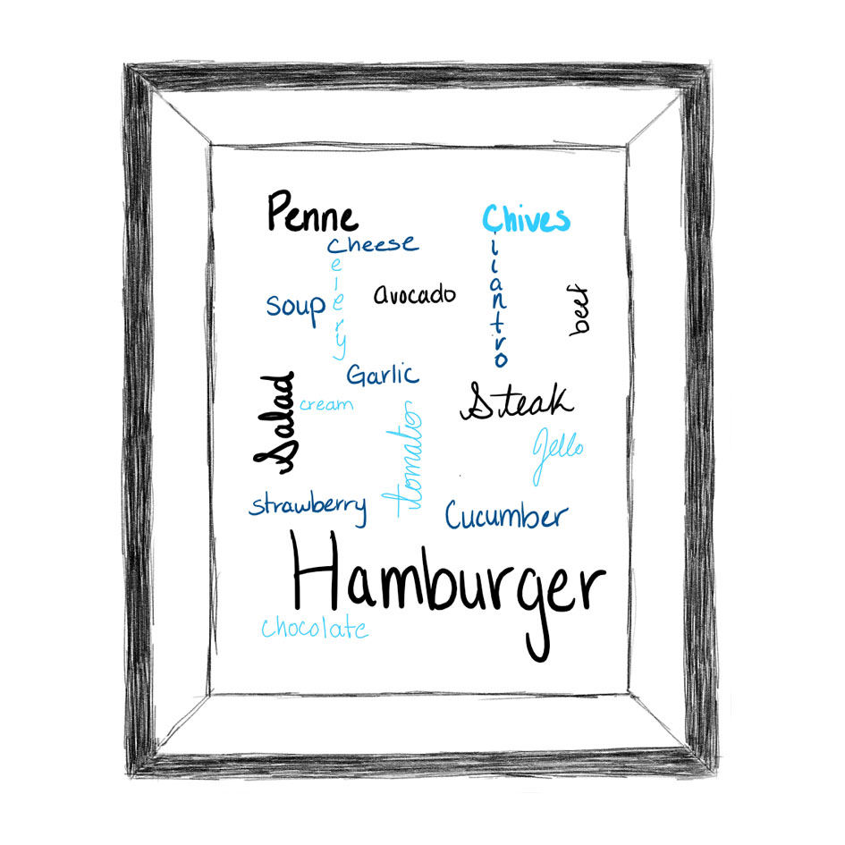
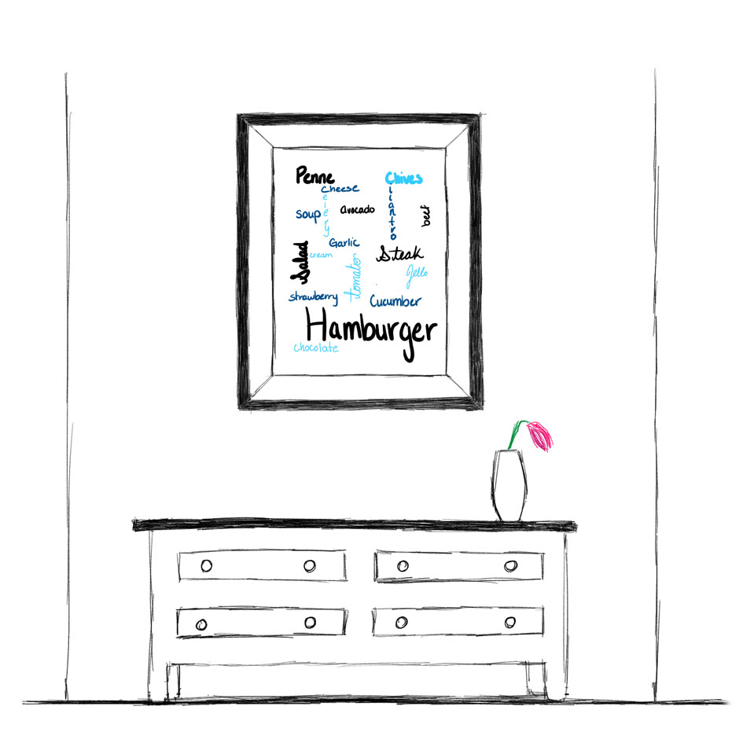
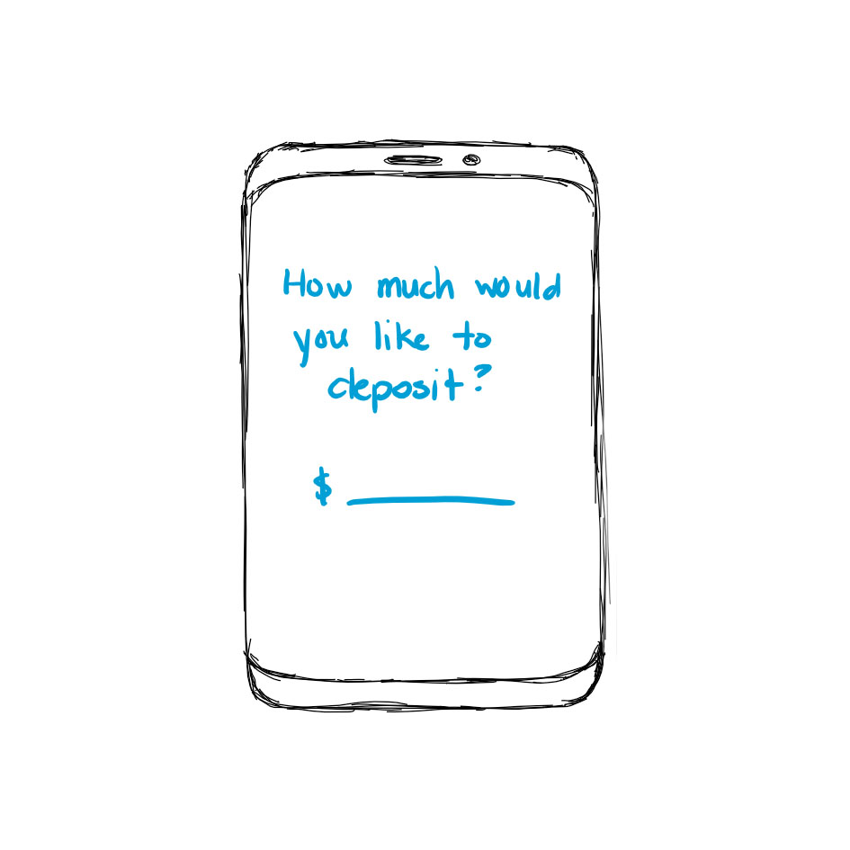
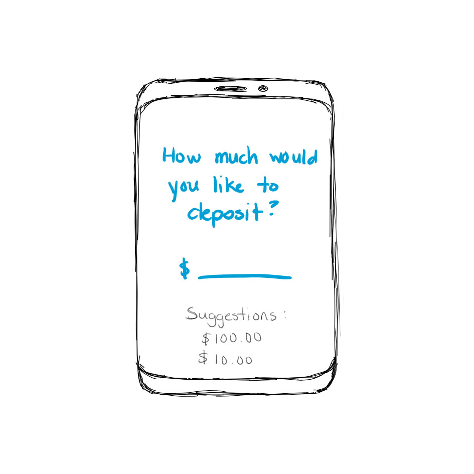
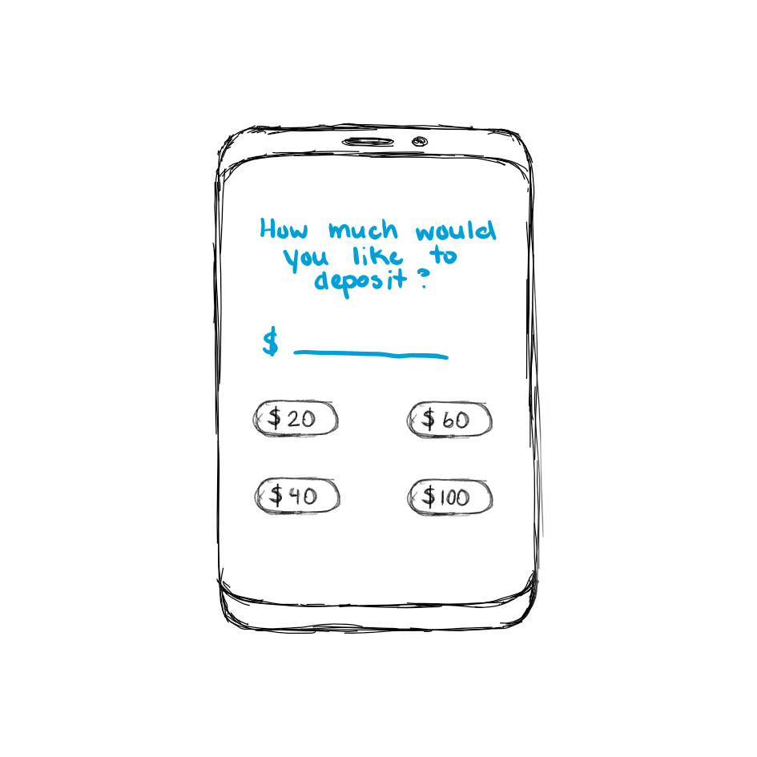
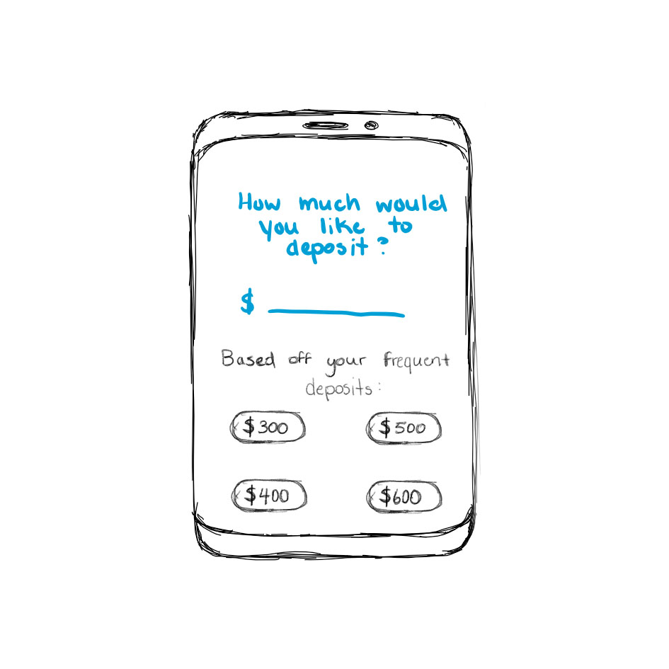

What I wanted to do was to create mosaics out of common key words that are themed together. How this will work is that a database will store the amount of key words that an individual searches up over a search engine, and takes those words and groups them together based off of its definition. The words and definitions should find a specific commonality between them all, and then store them in the database. Once the database is filled with a few words, a generator will then create the individual a personalized poster based off of their searches over that specific theme.
To explain further, we can go through a demonstration. Let's say that an individual's past three searches into a search engine was "how to make a sangria", "how to make a ceasar", and "best beers". These key words all relate to the theme of alcoholic drinks. After these searches, if the individual would like to create their personalized search poster, all they would have to do is hit the "generate" button in their search engine. The poster will then be generated with the three words "sangria", "caesar", and "beer" as the main focus, with a certain theme for the words and the background. These posters can then be framed and added as a decorative element to your kitchen.
Another example could be an individual's most common searches of under the theme of food, the data will take all of these searches in the category and bring them over to the generator, which will then create a nice poster with all of the words. Some words may be faded, while others are more bolded. Additionally, some may be horizontally placed, while others are vertically placed. The font also varies with each word as well as the colour. In regards to the background, the background of the poster will fit the coloured theme that the generator chose to use for the words.
These posters can then be printed out and given as gifts, as they hold a certain personal aspect to the individual, such as that individual's interests.
The data being sent across communication links that I would like to take a look at initially starts with the number of zeroes being sent across to process cryptocurrency. Since cryptocurrency is a growing trend among individuals, I wanted to be able to count the number of zeroes an individual uses to make their deposits within a year. Then I want to take the average of those zeroes to determine the approximate average of how much a person deposits. For example, if a person deposits $100.00 for 9 months and $10.00 for 3 months, then it would show that the user likes to deposit more in the hundreds since there are two zeroes in front of the decimal point.
This can help with aiming specific philantrophic goals that are within the hundreds towards the individual. In other words, if they like depositing in the hundreds, then they will have suggestions aimed specifically towards the individual to pursuade them to deposit more in the range of the hundreds, rather than the tens.
We can even use this data to observe the preference of depositing values that are even numbered and "exact" compared to those which are not as "clean" and use a specific amount of cents or dollars. This data can then help with the cryptocurrency apps to make pre-set deposit functions that use those specific values. For example, at ATM machines, they have a certain set of pre-set withdrawls, such as, $20, $40, $60, and $100. This can be implemented in the apps for cryptocurrency to help the customer make quicker deposits, and studies have shown that customers tend to use pre-set functions more than other functions where the individual must manually put in information.
By collecting the data of how much the user likes to deposit, we can then create custom pre-sets for them. For example, if a user would always deposit money in large amounts such as $400, $500, and $600, the pre-sets can change from $20, $40, $60, and $100, to be $300, $400, $500, and $600.
All sketches done by me through Microsoft OneNote and edited with Adobe Photoshop CC.